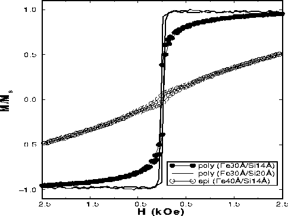

Magnetization curves for three Fe/Si multilayers. The y-axis
shows magnetization data normalized to the saturated value.
The solid line indicates data for a polycrystalline
(Fe30Å/Si20Å)x50 multilayer which has a
magnetization curve much like bulk Fe. The open circles
indicate data for an epitaxial (Fe40Å/Si14Å)x40
multilayer which has the high saturation field and low
remanent magnetization that are characteristic of
antiferromagnetic interlayer exchange coupling. The
polycrystalline (Fe30Å/Si14Å)x50 multilayer
(indicated by filled circles) has weaker antiferromagnetic
coupling than the epitaxial multilayer.